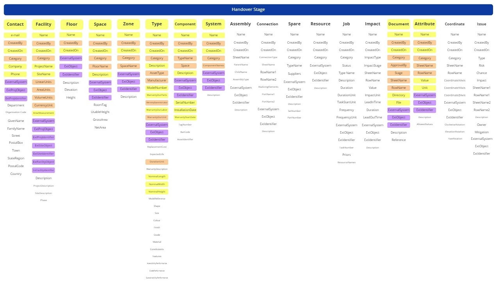

The FULL level is the most comprehensive tier of COBie data delivery. It encompasses all previous levels and adds the operational layer required for proactive maintenance. This level transforms the BIM model into a complete digital twin ready for Facility Management (FM) operations.

Figure: FULL level data requirements, including Attributes, Jobs, and Spare Parts.
Key Focus Areas:
Attributes: Granular technical data points for specific maintenance needs.
Jobs: Pre-defined maintenance tasks, schedules, and safety procedures.
Resources & Spares: Inventory lists of tools and parts required to sustain the facility.
Documents: Direct links to O&M manuals, warranties, and certificates.